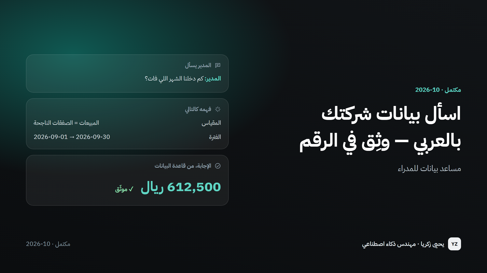

اسأل بيانات شركتك بالعربي — وثِق في الرقم
مساعد بيانات للمدراء — اسأل باللهجة السعودية أو بالفصحى، واحصل على الرقم والرسم والاستعلام الذي خلفه، وسؤال توضيحي عندما يكون سؤالك غير واضح.
- دوري
- صمّمته وبنيته بالكامل — تعريفات العمل، والمساعد، واختبار من 200 سؤال عربي، والتحقق على هيكل قاعدة بيانات حقيقية.

97.6%
من الإجابات الموثّقة صحيحة
200 سؤال عربي لم يرها أثناء البناء
10 / 10
أسئلة غير واضحة رد عليها بسؤال بدل التخمين
ثانيتان
الوقت المعتاد للإجابة
أقل من 0.1 سنت
تكلفة السؤال الواحد
حوالي 0.0003 دولار
المشكلة
لدى المدير سؤال — كم بعنا الشهر الماضي، من أبطأ موظف في الرد، كم متابعة متأخرة. لوحة المتابعة تجيب على الأسئلة التي فكّر فيها أحدهم قبل ربع سنة، لا على سؤال اليوم. فيذهب السؤال لمحلل البيانات وينتظر يومًا أو يومين. أدوات الذكاء الاصطناعي الجديدة التي "تتحدث مع قاعدة البيانات" سريعة، لكن فيها عيب صامت: تكتب استعلامًا يعمل، وترجع رقمًا يبدو صحيحًا، وأحيانًا لا يكون كذلك — إيرادات محسوبة مرتين، صفقات ملغاة داخل الحساب، أو البوت يظهر كأفضل موظف. ولا ينتبه أحد إلا بعد اتخاذ القرار.
كيف يعمل
الخطوة 1 / 5
اسأل
اكتب السؤال كما تقوله — باللهجة السعودية أو بالفصحى، حتى مع الأخطاء الإملائية.
الخطوة 2 / 5
الفهم
يفهم الذكاء الاصطناعي ما تطلبه — أي رقم، أي فترة، أي موظف أو وجهة — ولا شيء غير ذلك. لا يخترع أي رقم.
الخطوة 3 / 5
تعريفات معتمدة
"المبيعات" و"نسبة الإغلاق" و"تقييم الجودة" معرّفة مرة واحدة كما يقصدها العمل. وكل إجابة تستخدم نفس التعريف.
الخطوة 4 / 5
يسأل أو يعتذر
إذا كان السؤال غير واضح — "أفضل موظف" في الجودة أم في المبيعات؟ — يسأل. وإذا لم يكن عن البيانات يقول ذلك.
الخطوة 5 / 5
إجابة مع الدليل
الرقم يأتي مباشرة من قاعدة البيانات، مع جدول ورسم بياني، والاستعلام الذي خلفه لمن يريد التحقق.
النتائج
اختبار مغلق · أكتوبر 2026
- 200 سؤال عربي — فصحى ولهجة سعودية وبأخطاء إملائية ومتعددة الخطوات — كُتبت وأُغلقت قبل بناء المساعد، ثم شُغّلت مرة واحدة.
- 97.6% من الإجابات الموثّقة صحيحة. كل سؤال غير واضح قوبل بسؤال توضيحي، وكل طلب خارج النطاق اعتُذر عنه بلطف.
- نفس النتيجة على نسخة من هيكل قاعدة بيانات حقيقية — نفس الاستعلامات تعمل على قاعدة Postgres حيّة دون أي تعديل.
- نموذج أغلى بثماني مرات حقق نفس النتيجة، فاعتُمد النموذج الأسرع والأرخص — اختيار بالقياس لا بالتخمين.
كيف يفيد هذا شركتك
إجابة في ثوانٍ لا أيام
المدير يسأل بنفسه دون انتظار محلل بيانات أو لوحة متابعة جديدة.
رقم واحد للجميع
المبيعات تعني نفس الشيء في كل إجابة، لأن التعريف مكتوب مرة واحدة.
لا شيء مخفي
كل رقم يأتي مع الاستعلام الذي أنتجه، وأي شيء كتبه الذكاء الاصطناعي بنفسه يظهر بعلامة واضحة.
الشركات التي لديها نظام عملاء أو قاعدة مبيعات ومدراء يسألون بالعربي — السفر، العقارات، التجزئة، العيادات، مراكز الاتصال.
من المهم أن تعرف
- النسخة التجريبية تعمل على بيانات وهمية بنفس شكل قاعدة بيانات وكالة سفر حقيقية. البيانات الحقيقية ستأتي بأسئلة لم تُعرَّف بعد — وتُضاف سطرًا بسطر.
- في الأسئلة غير المعتادة يكتب الذكاء الاصطناعي الاستعلام بنفسه؛ هذه الإجابات تظهر بعلامة خاصة، وكانت صحيحة 10 مرات من 12 في الاختبار.
- اختُبر بالعربية فقط. الأسئلة بالإنجليزية تعمل لكن لم تُقَس.
الصور
التفاصيل التقنيةللمهندسين ومسؤولي التوظيف
- Python
- DeepSeek
- Semantic layer
- PostgreSQL
- DuckDB
- sqlglot
- Pydantic
- Streamlit
- توجيه على طريقة Snowflake Cortex Analyst: طبقة دلالية بصيغة YAML (31 مقياسًا و16 بُعدًا) يختار منها النموذج، واستعلامات موثّقة بمعاملات، وSQL حر كخيار أخير فقط.
- الـ SQL الحر يُولَّد ثلاث مرات ولا يُعرض إلا إذا أعطت الأغلبية نفس النتيجة، وكل استعلام يمر بحماية للقراءة فقط (SELECT واحد وجداول معروفة).
- التواريخ والأسماء تُحسب بالكود — رمضان، "آخر 3 شهور"، أسبوع يبدأ الأحد، "سارا" ← "سارة" المخزّنة، وموظفان باسم محمد ← سؤال توضيحي.
- التصحيح بالكود لا بنموذج. أُعيد تشغيل نفس الـ 200 سؤال على Postgres 16 مبني من 27 ملف ترحيل حقيقي، وكشف ذلك ربطًا بين ENUM ونص كانت النسخة التجريبية تخفيه.
لنتحدث عن مشروعك
أخبرني بما تحاول إصلاحه أو معرفته. سأرد عليك بخطة واضحة: الخطوات، والمدة، وتكلفة التشغيل.